Балконный садBalcony Garden
Хардкорный пиксельный симулятор растений. Они растут в реальном времени — даже когда игра закрыта. A hardcore pixel-art plant sim. Your plants grow in real time — even when the game is closed.
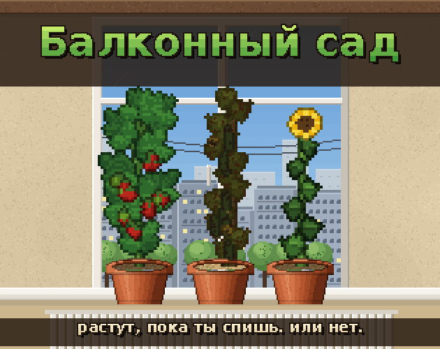
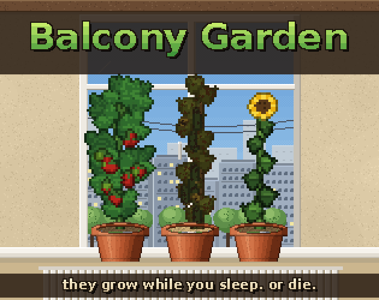
Как это устроеноHow it works
Никаких подсказокNo hints
Нет шкал и процентов. Влажность видно по цвету земли, болезнь — по листьям.No bars, no numbers. Read moisture by the soil colour and disease by the leaves.
Реальное времяReal time
Игровые сутки — 4 настоящих часа. Сад живёт и при закрытой игре.One in-game day lasts 4 real hours. The garden keeps living while the game is closed.
30 растений, 20 средств30 plants, 20 remedies
Одно средство лечит, другое вредит, третье убивает сразу.One remedy cures, another hurts, a third kills instantly.
Книга без оглавленияA book with no index
Ответы — в книге садовника с перепутанными страницами. Записывай всё в заметки у горшка.The answers are in a gardening book with shuffled pages. Keep notes next to each pot.
Режим «Подоконник»Windowsill mode
Одна кнопка — и игра превращается в маленькую прозрачную полку с горшками поверх всех окон. Работаешь, смотришь видео, а краем глаза видишь, что у огурца посветлела земля.One click turns the game into a small transparent shelf with your pots on top of all windows. Work or watch videos while keeping an eye on your cucumber.
Ещё есть заморозка горшка, если уезжаешь, и склад на 20 растений.There's also pot freezing for when you're away, and storage for 20 plants.
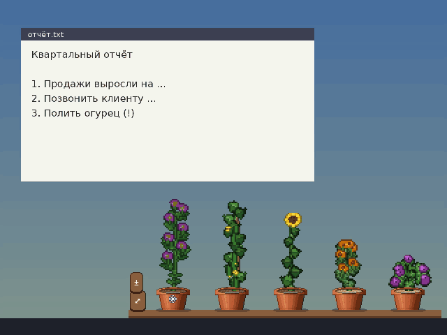
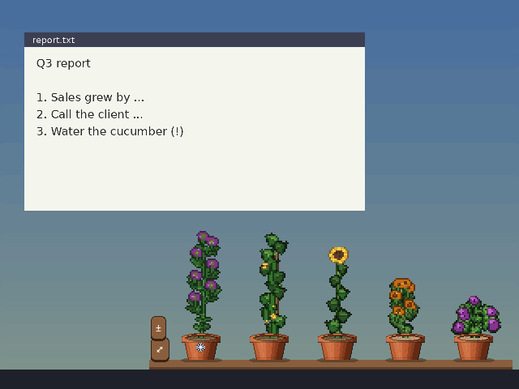
СкриншотыScreenshots
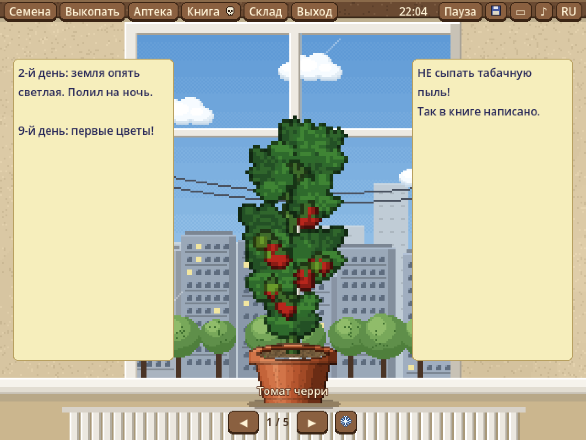
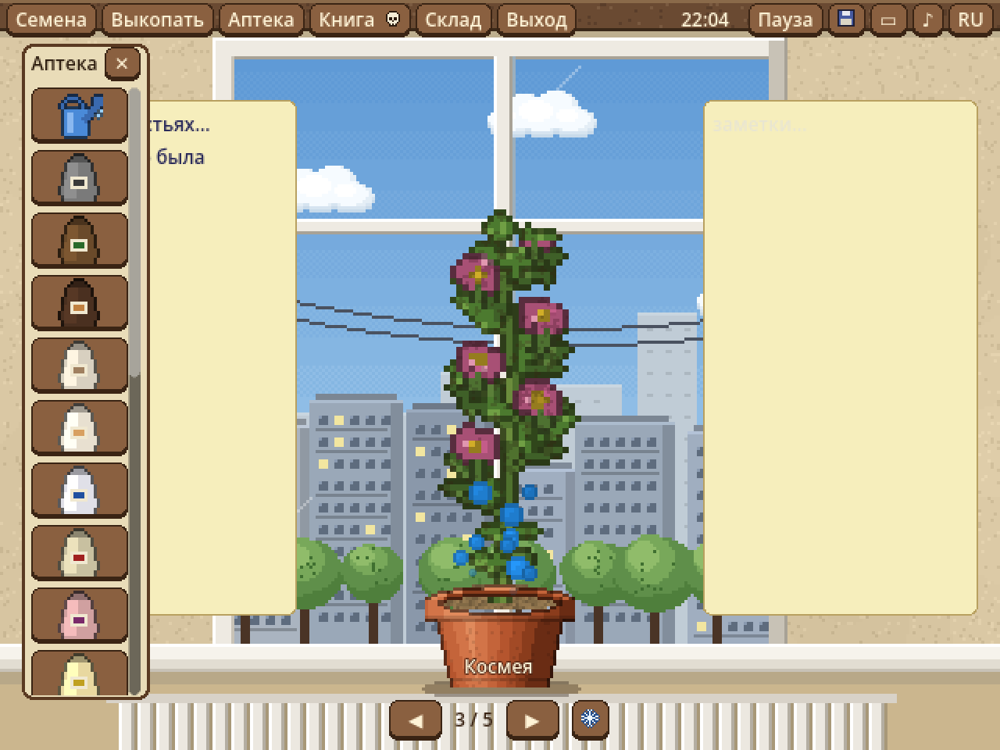
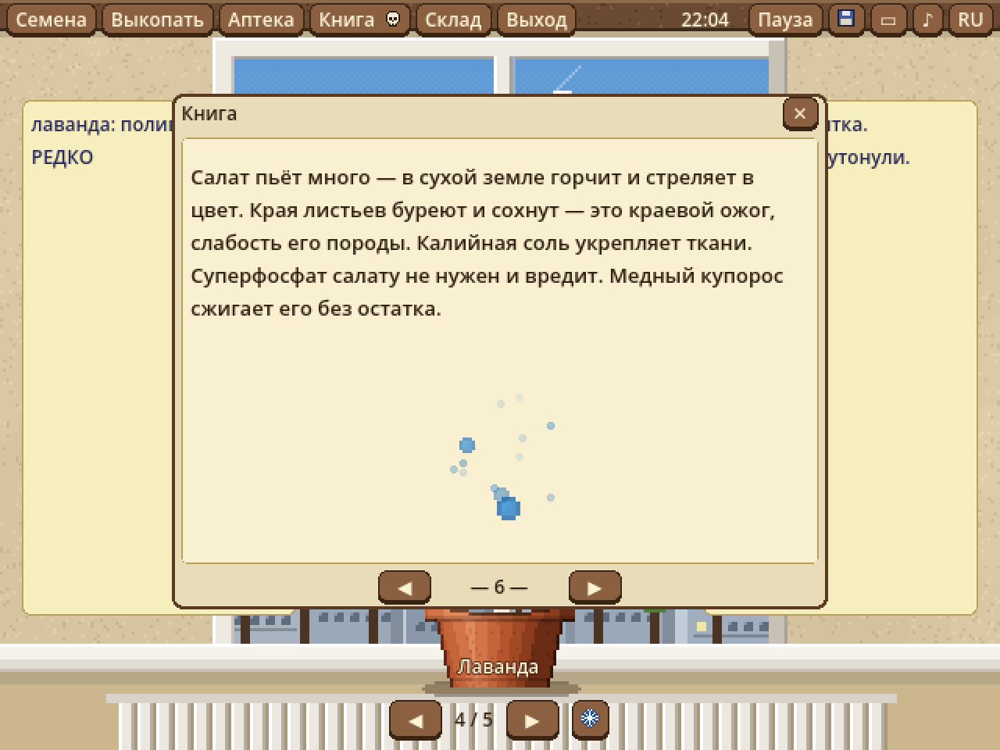
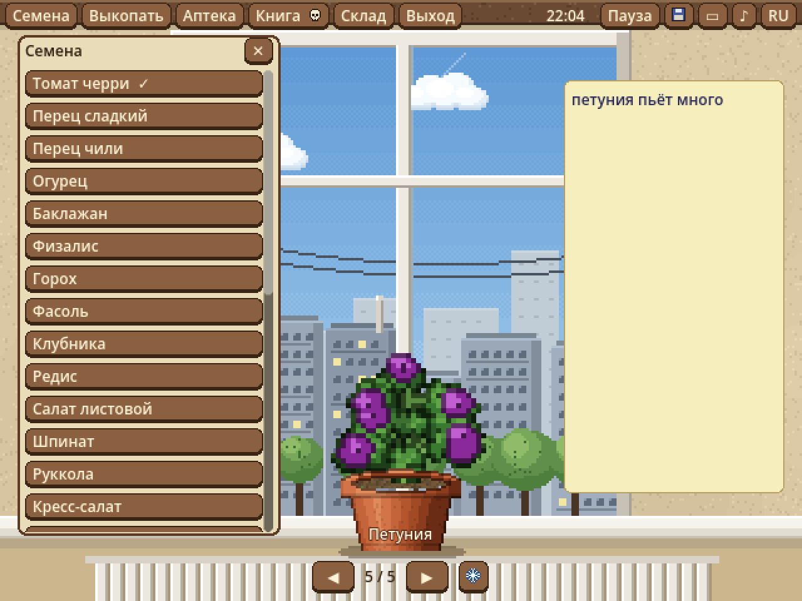
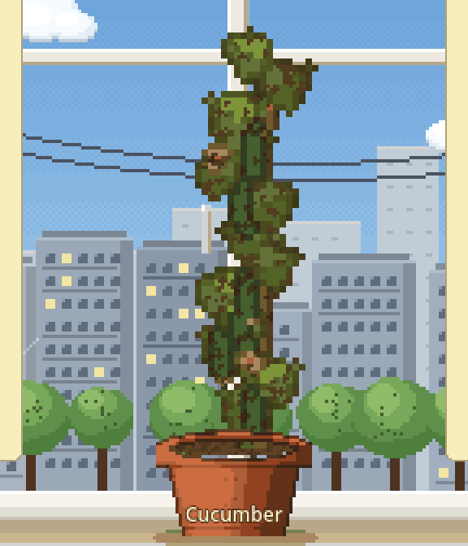
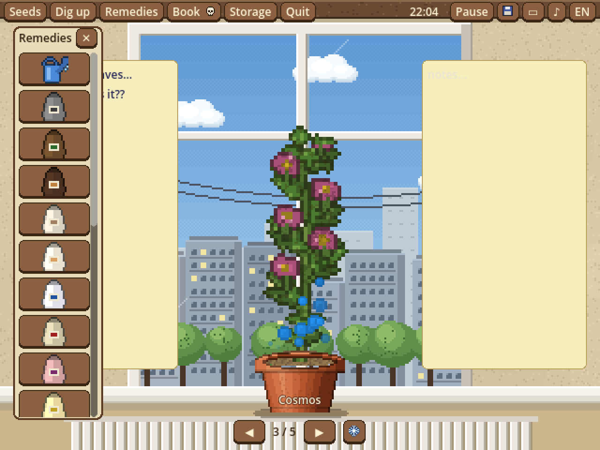
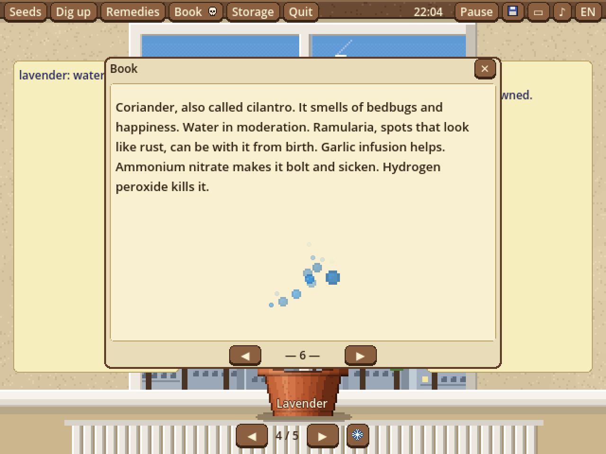
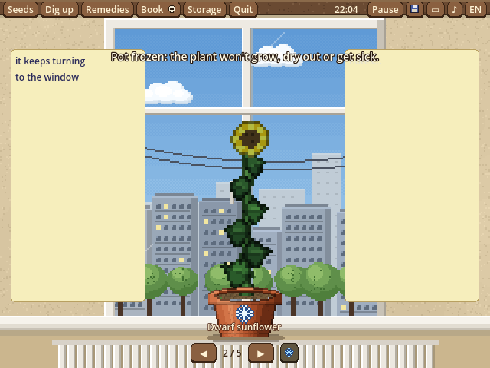
Как установитьHow to install
- Скачай архив кнопкой выше.
- Распакуй его в любую папку.
- Запусти
BalconyGarden.exe.
- Download the archive with the button above.
- Unzip it into any folder.
- Run
BalconyGarden.exe.
Если Windows покажет окно «Система Windows защитила ваш компьютер», нажми «Подробнее» → «Выполнить в любом случае». Так бывает со всеми играми от небольших разработчиков без платной цифровой подписи. If Windows shows "Windows protected your PC", click "More info" → "Run anyway". This happens with most games from small developers without a paid code signature.
Что дальшеWhat's next
В следующей версии — настоящая музыка и звуки: полив, лекарства, шелест книги, птицы за окном. Игра бесплатная и в альфе, так что любой отзыв помогает.The next version brings real music and sounds: watering, remedies, book pages, birds outside the window. The game is free and in alpha, so any feedback helps.